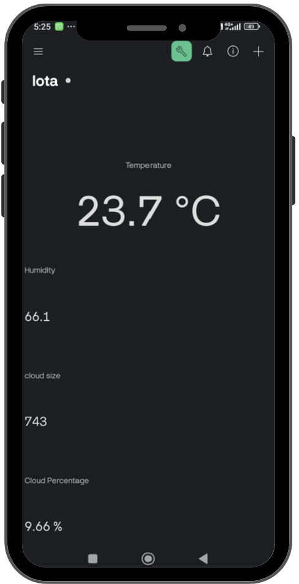

Our Purpose
Due to the fact that weather data are typically collected by large scale meterological stations, weather data today are too broad with little to no personalization. Weather stations typically focus more on forecasting data as well, meaning they barely pay attention to visualizing live data. As a result, user are limited to accessing data that may not reflect the precise weather conditions around them.
Our project aims to create a user friendly, customizable and non-bulky weather station that users can have access to in the comfort of their own home. With just a single click of a button, users are able to gain access to the latest weather data closest to them, enabling better decision making for their activities. All of our code is open-source, ensuring that all our software is transparent, reliable and can be easily explained.
Live Data from Google Sheets
Live Data from Looker Studio
Access The Blynk App Here
How It Works
Our weather station is designed to focus on live data collection, prioritizing real-time updates. The sensors, including a DHT11 sensor, a raindrop sensor and a camera connected to the Raspberry Pi, measure environmental variables such as temperature, humidity, and cloud data. Cloud data includes the colour of the clouds, the cloud coverage, along with the texture of the clouds. ensuring continuous monitoring of local conditions. The data is collected and displayed on the dashboard in real-time, allowing users to interact with the system instantly.
Unlike traditional weather stations that emphasize forecasting, our system is built around immediate data access. The Raspberry Pi processes incoming sensor data and immediately visualizes it on the Looker Studio and Blynk dashboard. This means that users can see live weather conditions, such as fluctuations im temperature or humidity, with a single click of a button.
All of our code is open-source, ensuring that every piece of software is transparent. By providing full access to our code, we foster a community-driven approach, allowing users to learn from, modify, and contribute to the development of the system. This enhances the reliability and integrity of the data and the system as a whole.
Contact Us
Have questions or feedback? Feel free to reach out:
info@weatherstation.com
Give us a call! 8899 7938